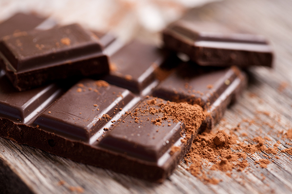

<!--new ion view and content-->
<ion-view>
<ion-content>

 <br/>
 <br/><!--line breaks-->
 <br/>

<!--button which links back to the home menu and styling-->
 <button class="button button-dark" ui-sref="tabs.home">
   Back to home
 </button>

  <div>
  
 </div>

</ion-content><!--close ion view and content-->
</ion-view>
